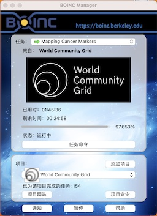

技术支持
博客声明
此博客没有收费项目，请各位谨防上当受骗。此博客不含广告，仅做公益的正版资源共享和技术交流
庞玺桐的个人博客在Gitalk插件帮助下借助GitHub Issues评论实现了评论功能!
由于公网反向代理服务器
博客概况
博客：http://pangxitong.free.tryzth.com
公告 庞玺桐的个人博客在Gitalk插件帮助下借助GitHub Issues评论实现了评论功能! |
|
在2022年我经历了……，精彩的2022年即将逝去，这一年经历了很多的事情，没有人能像白纸一样没有故事，成长的代价就是失去原来的样子，但是我们应当燃起斗志，学会突破自我，发扬个性，我相信人生而平等，而我生来不凡。那就希望在即将到来的2023年，……，做出真正的自己！
GitHub
GitHub是一个来自美国的源代码公开平台，我在GitHub创建了多个项目，希望代码自由能够尽快实现。我认为，在虚拟世界中，人人平等，没有贫富差距、种族歧视和性别歧视等现象。那么，科学技术也应该公众于世，而不是作为资本的工具。信息技术是造福人类的，而不是为人类添乱的。我是一个代码自由 主义者，也是一名共产主义者，希望我们能够贡献出自己的微薄力量。
|
目前，我的博客Gitalk应用的反向代理JavaScript代码是：
proxy: 您可以在这里 发布“Pull Request” 直接对现有代码进行修改 |
World Community Grid
BOINC的World Community Grid是一个，通过创建由全球志愿者社区授权的超级计算机来加速科学的非营利性公益志愿组织. |
 |
关注我
|

|
网易云音乐作品陈列
|
|
关注我